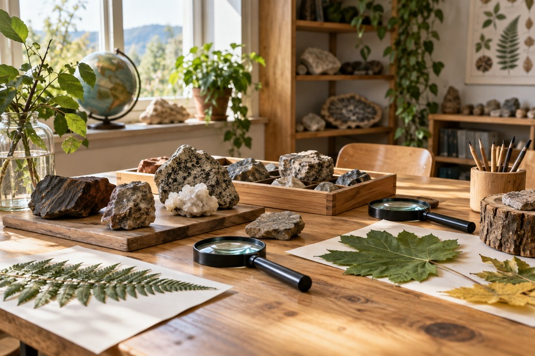
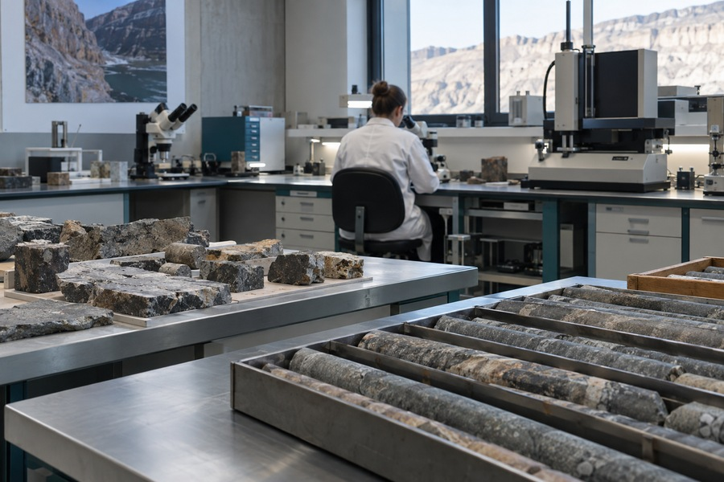
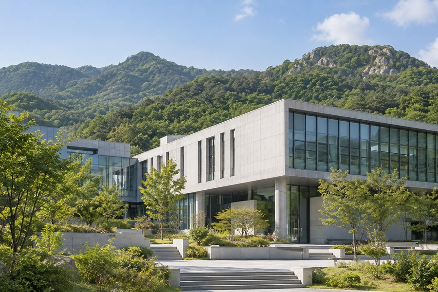

CHEONGRAM GEOPARK
Eco Education Center



CHEONGRAM GEO SITE
Eco Education Center
A folded rock cliff shaped by ancient seas and continuous river erosion.
LocationCheongram riverside
CategoryGeological heritage
Access09:00–18:00
Contact010-4894-4905
Geological story
A folded rock cliff shaped by ancient seas and continuous river erosion. A folded rock cliff shaped by ancient seas and continuous river erosion. A folded rock cliff shaped by ancient seas and continuous river erosion.